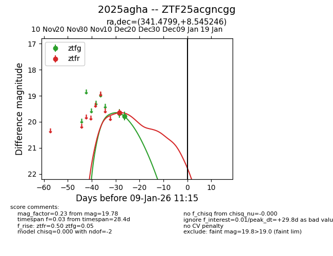
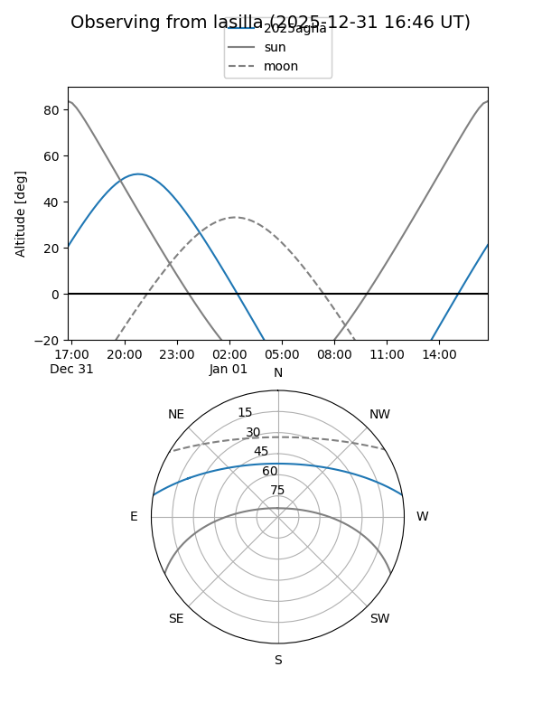
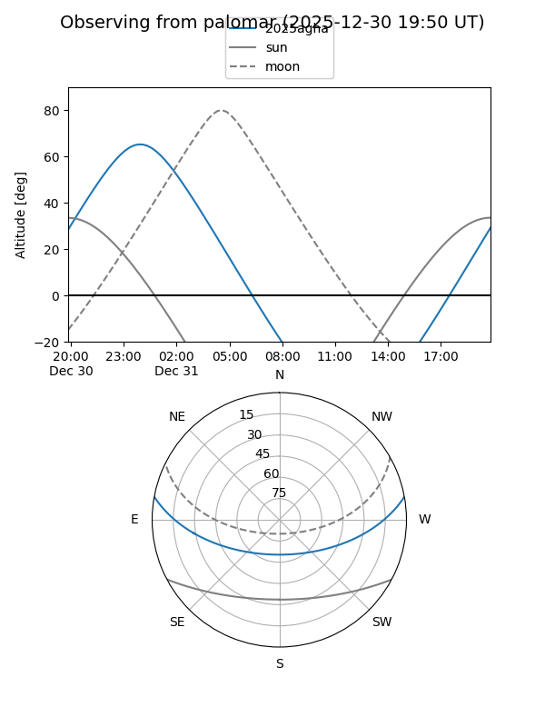

2025agha
Target 2025agha at 2025-12-31 16:59
Aliases and brokers:
FINK:
Lasair:
ALeRCE:
TNS:
YSE:
alt names
ZTF25acgncgg (ztf,fink_ztf)
2025agha (tns,yse)
Coordinates:
equatorial (ra, dec) = 341.4799,+8.54525
equatorial (HMS+DMS) = 22:45:55.17,+08:32:42.89
galactic (l, b) = (78.0589,-43.12759)
Flags:
Photometry:
last ztfg=19.78, ztfr=19.65
2 ztfg, 1 ztfr detections
Lightcurve

Visibility


Additional plots